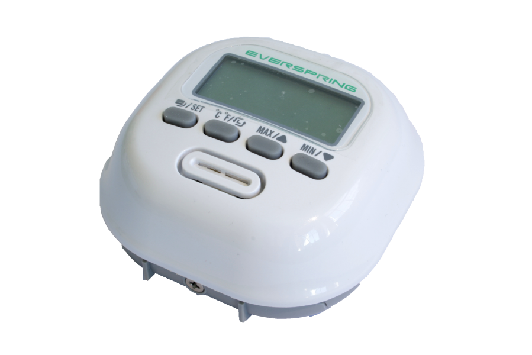
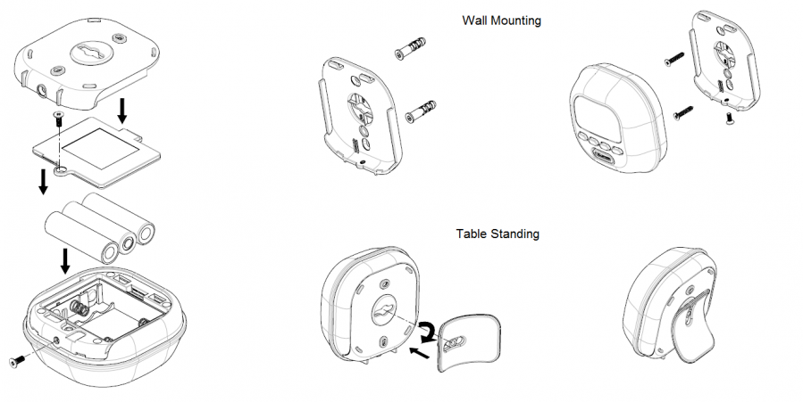
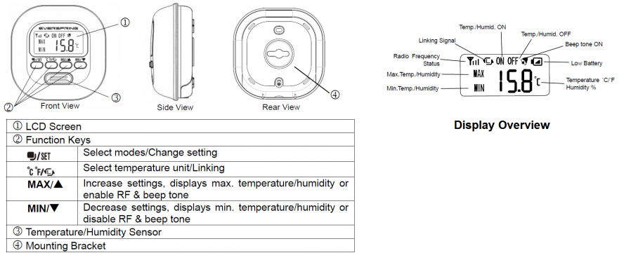
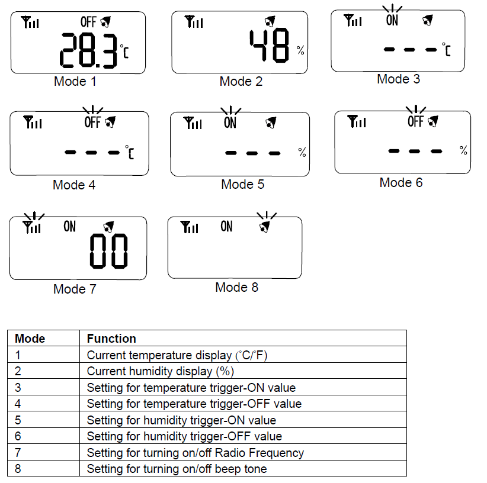

EVR_ST814
Firmware Version : 1.8 |
 |
Quick StartSThis device is a Z-Wave Sensor. Inclusion, Exclusion and wakeup are confirmed by three times quickly hitting the Linking button (second from left) on the front of the device. Please refer to the chapters below for detailed information about all aspects of the products usage. |

The Temp./Humid. Detector can either be mounted on a wall or can be freestanding on a table. Please consider a most suitable way before mounting/ placing it.
1. Release the Sensor from the mounting plate and the battery cover by removing the fixing screws.
2. Put the 3 * AA 1.5V batteries in the battery compartment.
3. For wall mounting use mount plate and the screws.
4. Refit the device to the back cover and secure with the fixing screw.
5. For table placing insert the stand into the hole on mounting bracket and turn 90 degrees lockwise.
6. Once snapped in place, the detector can be placed on a shelf, table or other surface where the temperature and humidity measurements are desired.
I On factory default the device does not belong to any Z-Wave network. The device needs to join an existing wireless network to communicate with the devices of this network. This process is called Inclusion. Devices can also leave a network. This process is called Exclusion. Both processes are initiated by the primary controller of the Z-Wave network. This controller will be turned into exclusion respective inclusion mode. Please refer to your primary controllers manual on how to turn your controller into inclusion or exclusion mode. Only if the primary controller is in inclusion or exclusion mode, this device can join or leave the network. Leaving the network - i.e. being excluded - sets the device back to factory default.
If the device already belongs to a network, follow the exclusion process before including it in your network. Otherwise inclusion of this device will fail. If the controller being included was a primary controller, it has to be reset first.
Make sure that your Z-Wave Controller is in the Inclusion-/Exclusion-Mode. Quickly click three times on the Linking button on the front of the device to confirm the process.

There are 8 modes available for selection. Press the Select Mode button to select desired mode for different settings.

MODE 1 and MODE 2 are showing as main displays on the screen. Once mode setting is finished (MODE 3 to MODE 8), the screen will return to main display automatically after 12 seconds, or by pressing the Linking button to return to main display.
1. Temperature
1.1 Display current Temperature
Press Select Mode button and select MODE 1 to display current temperature, and toggle Select Temperature Unit button to select the unit of temperature (°C /°F).
The temperature ranges from -20°C to 50°C . To show the last record of max/min temperature, press Max. or Min. button. To clear the record, press both Max. and Min. button at the same time.
Threshold Limit Warning:
If the temperature is reaching the limit, the icon of MAX or MIN will be displayed on the screen.
Ice Warning:
If the temperature falls to 0°C , temperature display will illuminate with LCD back light and beep tone will sound continuously for 1 second. Press any key to stop the beep tone.
1.2 Temperature Trigger-ON
Press Select Mode button and select MODE 3 to enter setting of temperature trigger-ON. Icon flashes and the screen shows the recorded trigger-ON temperature. If no value is preset, the screen will display " - - -°C ".
To adjust trigger-ON value, press and hold Select Mode button for 5 seconds until a long beep is sounded. The "- - -" starts flashing. Use Min. and Max. button to adjust the degree of temperature, and hold Min. or Max. button to scan through the temperature reading from -20°C to 50°C. Once the value is selected, press Select Mode button to confirm setting or press Linking button to cancel.
To clear the trigger-ON record, press both Min. and Max. button at the same time. The record is cleared after a long beep is sounded.
If the temperature reaches the preset trigger-ON value, Temp./Humid. Detector will send a Z-Wave signal. The screen of detector returns to MODE 1 and the icon "ON" is flashing with backlight illuminate and siganl tone sounds for 1 second. Press any key to stop the signal tone.
1.3 Temperature Trigger-OFF
Press Select Mode button and select MODE 4 to enter setting of temperature trigger-OFF. The "OFF" icon flashes and the screen shows the recorded trigger-OFF temperature. If no value is preset, the screen will display "- - -°C".
To adjust trigger-OFF value, press and hold Select Mode button for 5 seconds until a long beep is sounded. The "- - -" starts flashing. Use Min. and Max. button to adjust the degree of temperature, and hold Min. or Max. button to scan through the temperature reading from -20°C to 50°C. Once the value is selected, press Select Mode button to confirm setting or press Linking button to cancel.
To clear the trigger-OFF record, press both Min. and Max. button at the same time. The record is cleared after a long beep is sounded.
If the temperature reaches the preset trigger-OFF value, Temp./Humid. Detector will send a Z-Wave signal. The screen of detector returns to MODE 1 and the icon is flashing with backlight illumination and siganl tone sounds for 1 second. Press any key to stop the siganl tone.
Note:
The temperature trigger-ON and trigger-OFF cannot be set equal; there MUST be at least 2°C difference in between. For example, if now the trigger-OFF temperature is already set to be 20°C, so trigger-ON temperature can only be lower 18°C or higher 22°C (values between 18°C and 22°C cannot be set).
Once the detector has been triggered, the temperature must increase or cool down at least 2°C from the preset value before it can be triggered again. For example, if the detector is triggered on at 20°C, then the temperature must be higher 22°C or lower 18°C before it can be re-triggered.
2. Humidity
2.1 Display of Current Humidity
Press Select Mode button and select MODE 2 to display current humidity.
The humidity ranges from 20% RH to 90% RH. To show the last record of max/min humidity, press Min. or Max. button. To clear the record, press both Min. and Max. button at the same time.
Threshold Limit Warning:
If the humidity is reaching the limit, the icon of MAX or MIN will be displayed on the screen.
2.2 Humidity Trigger-ON
Press Select Mode button and select MODE 5 to enter setting of humidity trigger-ON. The "ON" icon flashes and the screen shows the recorded trigger-ON humidity. If no value is preset, the screen will display "- - -%".
To adjust trigger-ON value, press Select Mode button and hold for 5 seconds until a long beep is sounded. The "- - -" starts flashing. Use Min. and Max. button to adjust the percentage of humidity, and hold Min. or Max. button to scan through the humidity reading from 20%RH to 90%RH. Once the value is selected, press Select Mode button to confirm setting or press Linking button to cancel.
To clear the trigger-ON record, press both Min. and Max. button at the same time. The record is cleared after a long beep is sounded.
If the humidity reaches the preset trigger-ON value, Temp./Humid. Detector will send a Z-Wave signal. The screen of detector returns to MODE 2 and the "ON" icon is flashing with backlight illuminate and signal tone sounds for 1 second. Press any key to stop the signal tone.
2.3 Humidity Trigger-OFF
Press Select Mode button and select MODE 6 to enter setting of humidity trigger-OFF. The "OFF" icon flashes and the screen shows the recorded trigger-OFF humidity. If no value is preset, the screen will read "- - -%".
To adjust trigger-OFF value, press and hold Select Mode button for 5 seconds until a long beep is sounded. The "- - -" starts flashing. Use Min. or Max. button to scan through the humidity reading from 20%RH to 90%RH. Once the value is selected, press Select Mode button to confirm setting or press Linking button to cancel.
To clear the trigger-OFF record, press both Min. and Max. button at the same time. The record is cleared after a long beep is sounded.
If the humidity reaches the preset trigger-OFF value, Temp./Humid. Detector will send a Z-Wave signal. The screen of detector returns to MODE 2 and the "OFF" icon is flashing with backlight illuminates and signal tone sounds for 1 second. Press any key to stop the signal tone.
Note:
The humidity of trigger-ON and trigger-OFF cannot be set equal; there MUST be at least 5% difference in between. For example, if now the trigger-ON humidity is already set to be 50%, so trigger-OFF humidity can only be lower 45% or higher 55%. (Values between 45% and 55% cannot be set.)
Once the detector has been triggered, the humidity must raise up or drop down at least 5% from the preset value before it can be triggered again. For example, if the detector has been triggered on at 50%, then the temperature must be higher 55% or lower 45% before it can be re-triggered.
3. Z-Wave Function
This function is designed to enable or disable the sending Z-Wave commands to the associated nodes, as Temp./Humid. Detector triggered on/off.
Press Select Mode button and select MODE 7, the icon for Radio Frequenzy Status should flash. Press Max. button to turn On (enable) the function or Min. to turn OFF (disable) the function.
3.1 Programming Z-Wave
Z-Wave's Groups (Association Command Class Version 2)
The Temp./Humid. Detector can be set to send reports to or control associated Z-Wave devices. It supports two association groups with one node support for Grouping 1 and three nodes support for Grouping 2.
Grouping 1 includes POWER_APPLIED, SENSOR_MULTILEVEL _REPORT, ALARM_REPORT and BATTERY_REPORT_COMMAND. Grouping 2 includes BASIC_SET.
Grouping 1
POWER_APPLIED command
Whenever power is applied, it will send ALARM_REPORT command to the nodes of Grouping 1 to inform the devices that the detector is powered up.
MULTILEVEL_SENSOR_REPORT
The detector will emit SENSOR_MULTILEVEL_REPORT to inform the nodes of Grouping 1 automatically its current temperature and humidity. Refer to the section of Z-Wave's Configuration for settings of auto report configuration.
Low Battery Report
When the battery level of the detector drops to an unacceptable level, the Low Battery icon will appear on the LCD and the detector will emit ALARM_REPORT command to the nodes of Grouping 1.
Grouping 2 (Max. Node = 3)
When the detector is triggered, it will emit BASIC_SET_COMMAND to the nodes of Grouping 2.
Please refer to the table below for the setting of basic set command.
Note:
If the Z-Wave mode is OFF, no command will be sent even the Temp./Humid. Detector has been triggered. If Z-Wave mode is ON and the detector has been triggered, the device will send commands to nodes of Grouping 2.
If the Z-Wave mode reading is 00, it implies no node ID has been allocated by Z-Wave Controller. Please execute inclusion mode as described in the manual.
4. Beep Tone
To set the beep tone, press Select Mode button and select MODE 8. The Beep Tone icon flashes. Press Max. for ON and Min. for OFF. If it is ON, a beep tone will be sounded whenever a button is pressed; 4 continuous beep tones will be sounded for 1 second if the detector has been triggered.
W This device is battery operated and turned into deep sleep state most of the time to save battery life time. Communication with the device is limited. In order to communicate with the device, a static controller C is needed in the network. This controller will maintain a mailbox for the battery operated devices and store commands that can not be received during deep sleep state. Without such a controller, communication may become impossible and/or the battery life time is significantly decreased.
This device will wakeup regularly and announce the wakeup state by sending out a so called Wakeup Notification. The controller can then empty the mailbox. Therefore, the device needs to be configured with the desired wakeup interval and the node ID of the controller. If the device was included by a static controller this controller will usually perform all necessary configurations. The wakeup interval is a tradeoff between maximal battery life time and the desired responses of the device.
Quickly clicking three times on the Linking button on the front of the device will issue a Node Information Frame and keep the device awake to receive configuration commands.
It is possible to set the node ID to 255 to send wakeup notifications as broadcast. In this mode device takes more time to go to sleep and drains battery faster, but can notify all it's direct neighbors about a wakeup.
NI The Node Information Frame is the business card of a Z-Wave device. It contains information about the device type and the technical capabilities. The inclusion and exclusion of the device is confirmed by sending out a Node Information Frame. Beside this it may be needed for certain network operations to send out a Node Information Frame.
Quickly clicking three times on the Linking button on the front of the device will issue a Node Information Frame and keep the device awake to receive configuration commands.
A Z-Wave devices control other Z-Wave devices. The relationship between one device controlling another device is called association. In order to control a different device, the controlling device needs to maintain a list of devices that will receive controlling commands. These lists are called association groups and they are always related to certain events (e.g. button pressed, sensor triggers, ...). In case the event happens all devices stored in the respective association group will receive a common wireless command.
Association Groups:
| 1 | Battery Status and Sensor Report (max. nodes in group: 1) |
| 2 | Sensor Triggered (max. nodes in group: 3) |
Z-Wave products are supposed to work out of the box after inclusion, however certain configuration can adapt the function better to user needs or unlock further enhanced features.
IMPORTANT: Controllers may only allow to configure signed values. In order to set values in the range 128 … 255 the value sent in the application shall be the desired value minus 256. For example: to set a parameter to 200 it may be needed to set a value of 200 minus 256 = minus 56. In case of two byte value the same logic applies: Values greater than 32768 may needed to be given as negative values too.
| Value | Description |
|---|---|
| 0 | Disable |
| 1 — 99 | Use value (Default 99) |
| Value | Description |
|---|---|
| 236 — 255 | Trigger On on |
| 0 — 50 | Trigger On on |
| 99 | Disable (Default) |
| Value | Description |
|---|---|
| 236 — 255 | Trigger Off on |
| 0 — 50 | Trigger Off on |
| 99 | Disable (Default) |
| Value | Description |
|---|---|
| 20 — 90 | Trigger On on |
| 99 | Disable (Default) |
| Value | Description |
|---|---|
| 20 — 90 | Tigger Off on |
| 99 | Disable (Default) |
| Value | Description |
|---|---|
| 0 | Disable (Default) |
| 1 — 1439 | Auto report periodically |
| Value | Description |
|---|---|
| 0 | Disabled (Default) |
| 1 — 70 | Auto report on temp. change |
| Value | Description |
|---|---|
| 0 | Disable (Default) |
| 5 — 70 | Auto report on humidity change |
| Battery Type | 3 * AA |
| Explorer Frame Support | No |
| SDK | |
| Device Type | Slave with routing capabilities |
| Generic Device Class | Multilevel Sensor |
| Specific Device Class | Routing Multilevel Sensor |
| Routing | No |
| FLiRS | No |
| Firmware Version | 1.8 |